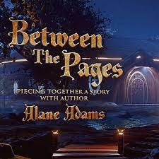

Between the Pages: A Literary Journey through Biographies
Embark on a captivating literary journey through the lives of extraordinary individuals in "Between the Pages." This series explores the art of storytelling in biographies, offering readers a profound experience of discovering the human spirit within the pages of books. Each post unveils the intricate details of remarkable lives, capturing the essence of resilience, creativity, and triumph over challenges. Join us in exploring how biographies, as a literary genre, have the power to inspire, enlighten, and create a deeper understanding of the diverse human experience. Let the words between the pages transport you to worlds shaped by extraordinary individuals, leaving an indelible mark on history and literature.
.jpg)
Ink Chronicles: Unveiling Lives in Book Form
"Ink Chronicles" invites readers on an enchanting journey into the lives of fascinating individuals, immortalized in the ink of biographical narratives. This series delves into the magic of storytelling through books, exploring the profound impact of words on paper. Each post unfolds the narratives of iconic figures, offering a deep dive into their achievements, challenges, and the legacies they leave behind. Join us in exploring how biographies serve as portals to different worlds, connecting readers with the diverse stories that shape our understanding of humanity. "Ink Chronicles" celebrates the art of biography writing, where lives become timeless tales, etched into the pages of literature for generations to come.
.jpg)
Library Legacies: Biographies on Every Shelf
Step into the captivating world of "Library Legacies," where biographies unfold as hidden treasures on library shelves. This series explores the lives and legacies of influential figures, each story waiting to be discovered in the vast expanse of literature. Each post invites readers to embark on a literary adventure, uncovering the profound impact of biographical narratives. "Library Legacies" celebrates the richness of human experiences, offering a unique perspective on the lives of remarkable individuals. Join us in exploring the pages of history, as each biography becomes a testament to the enduring power of storytelling and its ability to connect generations through the written word.
.jpg)
The Book of Lives: Exploring Biographies Through Reading
"The Book of Lives" invites readers on a transformative journey into the world of biographies, exploring the rich tapestry of human experiences documented in literature. This series delves into the profound impact of reading biographies, uncovering unique stories that shape our understanding of life. Each post celebrates the magic of storytelling through books, inviting readers to immerse themselves in the lives of extraordinary individuals. From tales of resilience to stories of creativity, "The Book of Lives" offers a diverse range of narratives that inspire, enlighten, and leave a lasting impression. Join us in exploring the power of the written word to illuminate the human spirit and connect readers with the extraordinary lives documented on the pages of biographies.
.jpg)
Chapters of Lives: Unraveling Stories One Page at a Time
"Chapters of Lives" takes readers on a captivating journey of unraveling stories, one page at a time. This series explores the intricate details of extraordinary individuals, inviting readers to turn each chapter and discover the lives that have left an indelible mark on history. Each post celebrates the art of biography writing, unveiling the triumphs, challenges, and unique journeys of iconic figures. "Chapters of Lives" reflects on the power of storytelling to connect readers with the human experience, offering a nuanced perspective on the diverse lives documented in literature. Join us in exploring the pages of history, where each chapter unfolds a new layer of the human narrative, weaving together the threads of resilience, creativity, and the enduring legacy of remarkable individuals.